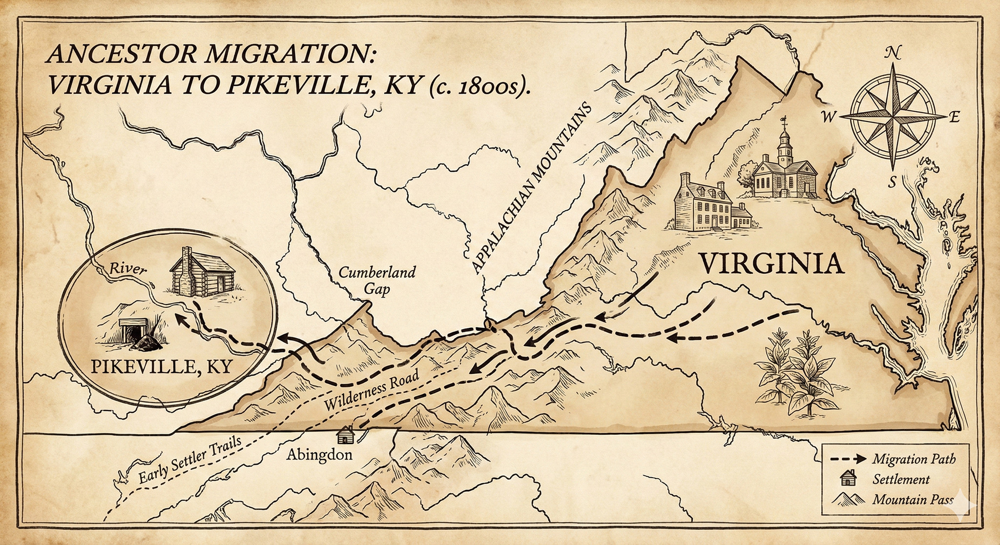

Tracing the Holt-Baldwin line from Appalachian hollows to the 1620 Mayflower. Real research, real records, real stories.
This research connects Melungeon heritage, Civil War history, and a Mayflower lineage. Through meticulous record-gathering and DNA analysis, the Holt-Baldwin family reveals a uniquely American story—one that spans German pioneers, tri-racial Appalachian communities, and a direct connection to the 1620 Mayflower voyage.

From Pocahontas and Mayflower passengers (direct ancestors) to Dolly Parton, Elvis Presley, George Washington, FDR, Walt Disney, and Jackie Kennedy (documented cousins). Real genealogy, real connections — with an important distinction between who Barrett descends from and who he's related to.
Nearly every American conflict represented in one family line — from the founding of the nation to aircraft carrier duty. The Holt family has never stopped answering the call.
The Matriarch of the Kindred Fortress. For thirty years she shielded her children inside a web of kin, using Appalachian geography and social strategy to protect a family the outside world wasn't meant to understand.
A Union soldier who deserted under an alias, fled to Kentucky, and built a new identity. The patriarch of the Holt line.
The matriarch of the high ridges. Her line traces directly to Edward Doty of the 1620 Mayflower — the genealogical key to everything.
The tri-racial Appalachian community whose DNA and surnames wind through the Holt and Baldwin lines. A fascinating American story.
Fern Rosik Glasgow's family memoir — the oral history that provided the first clues to Henry Holt's alias and the family's true heritage.
Through Matilda's mother Sarah Elliott, the line traces to Edward Doty, a Mayflower passenger. Barrett is a member of the Alabama Society of Mayflower Descendants.
An interactive family tree spanning the Holt, Baldwin, Collins, and Newsom branches. In progress.
Through Matilda Baldwin's maternal line, the Holt family connects directly to the 1620 Mayflower voyage. Her mother, Sarah Elliott, descended from Edward Doty, a Mayflower passenger. This connection is documented and verified through the Alabama Society of Mayflower Descendants (SMDAL), making Barrett a member in good standing. This remarkable lineage ties the Appalachian Holt-Baldwin family to one of America's most iconic historical moments.
An interactive family tree spanning the Holt, Baldwin, Collins, and Newsom branches is currently in progress. Check back soon for a comprehensive genealogical visualization.